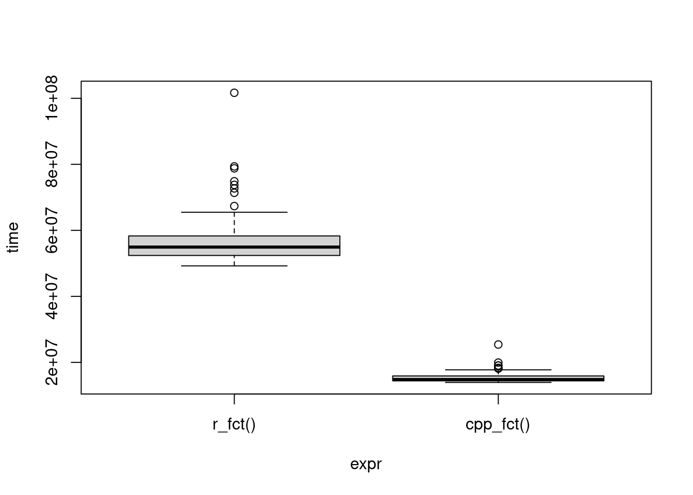

Rcpp::sourceCpp("PSO.cpp")Optimizing R Code Performance: A Case Study Using Particle Swarm Optimization and the Rosenbrock Function
In this tutorial, we will demonstrate how to use the ast2ast package to translate R functions into C++ functions. We will use a Particle Swarm Optimization (PSO) algorithm on the Rosenbrock function as an example. The PSO algorithm calls the loss function many times, so using a compiled function instead of a native R function can significantly speed up the computation.
Step 1: Compile the particle swarm Optimization algorithm
First, we compile the C++ file containing the PSO code.
Step 2: Defining the Rosenbrock function in R
Next, we define the Rosenbrock function in R. This function will be used as the loss function in our PSO algorithm.
rosenbrock <- function(parameter) {
value <- 0
for (i in 1:(length(parameter) - 1)) {
value <- value +
100 * (parameter[i + 1] - parameter[i]^2)^2 +
(1 - parameter[i])^2
}
return(value)
}Step 3: Running the PSO algorithm with the R function
We then run the PSO algorithm with the Rosenbrock function defined in R.
lb <- -10000
ub <- 10000
error_threshold <- 0.0000001
npop <- 40
pso(rep(lb, 3), rep(ub, 3), rosenbrock, 10000, npop, error_threshold)$insilico
[1] 6.935181e-08
$global_best_vec
[,1] [,2] [,3]
[1,] 1.000017 1.000027 1.000078Step 4: Translating the R function to C++ with ast2ast
Now, we use ast2ast to translate the Rosenbrock function from R to C++.
rosenbrock_cpp <- function(parameter) {
value::double <- 0
sz::int <- length(parameter)
for (i in 1:(sz - 1)) {
value <- value +
100 * (parameter[i + 1] - parameter[i]^2)^2 +
(1 - parameter[i])^2
}
return(value)
}
rosenbrock_cpp <- ast2ast::translate(rosenbrock_cpp,
output = "XPtr",
handle_inputs = "",
references = TRUE,
verbose = FALSE
)Step 5: Running the PSO algorithm with the C++ function
We can now run the PSO algorithm with the Rosenbrock function defined in C++.
pso_xptr(rep(lb, 3), rep(ub, 3), rosenbrock_cpp, 1000, npop, error_threshold)$insilico
[1] 3.387375e-08
$global_best_vec
[,1] [,2] [,3]
[1,] 0.9999178 0.9998369 0.9996721Step 6: Benchmarking the R and C++ functions
Finally, we benchmark the performance of the R and C++ functions using the microbenchmark package.
r_fct <- function() {
set.seed(1234)
pso(rep(lb, 3), rep(ub, 3), rosenbrock, 1000, npop, error_threshold)
}
cpp_fct <- function() {
set.seed(1234)
pso_xptr(rep(lb, 3), rep(ub, 3), rosenbrock_cpp, 1000, npop, error_threshold)
}
res <- microbenchmark::microbenchmark(
r_fct(),
cpp_fct()
)
resUnit: milliseconds
expr min lq mean median uq max neval cld
r_fct() 49.15161 51.78837 53.57326 52.37645 55.01028 68.31928 100 a
cpp_fct() 13.60880 13.85153 14.28999 14.00231 14.62342 18.03510 100 bplot(res)